MANUAL DE USUARIO
Guía de administración y actualización del sitio web corporativo de IMAGENIA
help1. Introducción
¡Bienvenido al manual del administrador de IMAGENIA! Este documento ha sido diseñado de manera 100% no técnica para guiarte en el uso, control y mantenimiento del panel de control de tu sitio web.
Con este panel serás capaz de actualizar imágenes, publicar nuevas historias en el blog, cargar productos, crear filtros de búsqueda y responder las solicitudes directas de tus clientes sin necesidad de escribir código ni depender de programadores.
infoRecomendación Inicial
Mantén este panel guardado en tus favoritos. Antes de realizar cambios importantes en tus productos o catálogos, te recomendamos tener tus imágenes listas en la computadora y en el tamaño idóneo.
login2. Acceso y Seguridad
Para ingresar al panel de control, accede desde tu navegador web a la dirección privada que te ha sido asignada para la administración de tu página.
Encontrarás una pantalla sencilla donde debes introducir tus datos:
- Correo electrónico: Ingresa tu cuenta de administrador registrada.
- Contraseña: Digita la clave segura de acceso.
- Haz clic en el botón Entrar.
lockSeguridad de tu Cuenta
No compartas tus claves de acceso. Si requieres que otra persona colabore administrando el catálogo o leyendo correos, es preferible crearle un acceso propio.
dashboard3. Dashboard (Panel Principal)
Al iniciar sesión verás la pantalla del Dashboard. Este es el resumen rápido de la actividad de tu web.

En esta sección encontrarás:
- Tarjetas estadísticas: Muestra la cantidad total de productos activos en la tienda, catálogos PDFs subidos y mensajes de contacto recibidos en el buzón.
- Actividad Reciente (Mensajes): Una tabla con las últimas 5 personas que han llenado el formulario de contacto de tu sitio web, mostrándote de inmediato sus nombres, correos y empresas.
tune4. Contenido General del Sitio
En el menú lateral encontrarás la opción Contenido del Sitio. Aquí controlas los textos e imágenes globales de tu página web agrupados por pestañas.
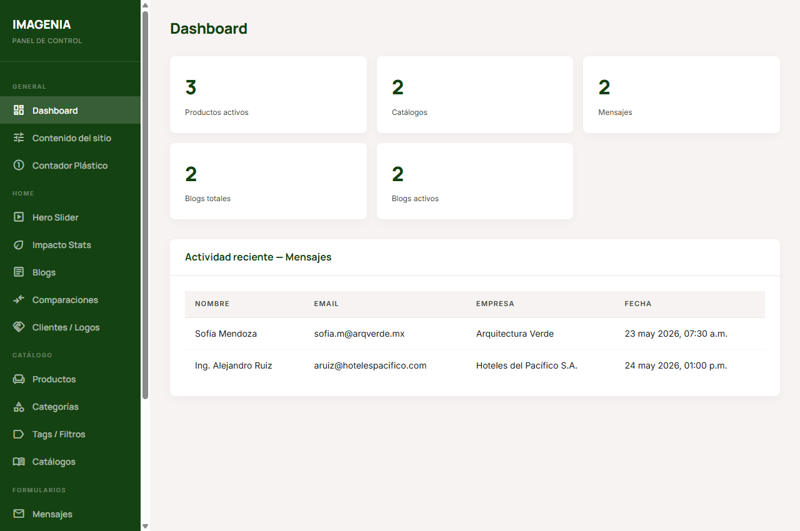
¿Cómo editar esta información?
- Busca la sección correspondiente (ej: *Página: Inicio* o *Configuración WhatsApp*).
- Edita el texto del campo directamente. Si es un archivo o banner de cabecera, verás la opción de Subir Archivo.
- Haz clic en el botón Guardar cambios ubicado en la esquina superior derecha del panel para publicar los cambios.
edit_noteEdición con Texto Enriquecido
Para apartados como los términos de servicio, verás una barra de herramientas con opciones para poner negritas, cursivas o crear listas. Funciona exactamente igual a un redactor de texto convencional.
counter_15. Contador Plástico
Esta función es clave para resaltar el impacto ecológico de la marca. Permite controlar la gran cifra animada que se muestra en el sitio web detallando los kilos o toneladas reciclados.
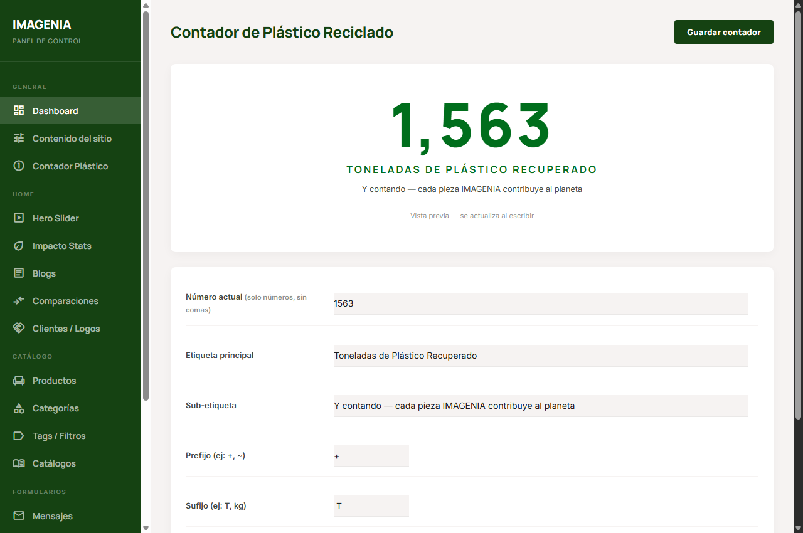
Configuración paso a paso:
- Número actual: Escribe el valor neto (ej:
2540). Importante: Escribe solo números, el sistema les colocará las comas de miles automáticamente. - Etiqueta y sub-etiqueta: Escribe la explicación de la cifra que verán tus visitantes (ej: "Toneladas de Plástico Recuperado").
- Prefijos y sufijos: Puedes agregar un signo de más (
+) antes o las unidades (Tokg) después del número. - Color de fondo: Selecciona el color de la tarjeta desde la paleta de colores.
- Haz clic en Guardar contador.
slideshow6. Carrusel Principal (Hero Slider)
El carrusel o slider son las imágenes grandes y dinámicas que ven los visitantes al cargar por primera vez tu sitio web de inicio.
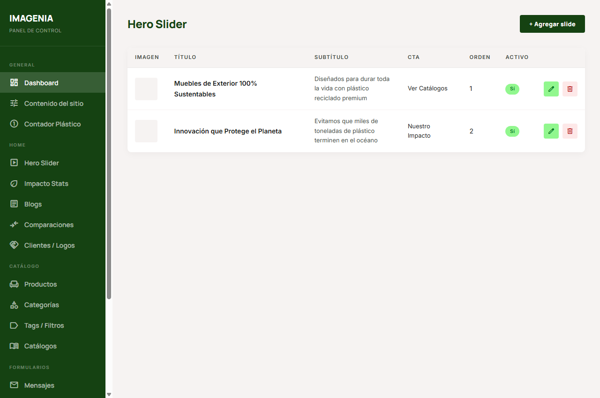
Cómo añadir o modificar diapositivas:
- Haz clic en + Agregar slide para uno nuevo, o en el icono de lápiz (azul) en la tabla para modificar uno existente.
- Escribe un Título y Subtítulo claro. Notarás que el formulario te brinda una Previsualización de Texto en vivo para ver cómo contrasta contra el fondo verde de marca.
- Imagen: Haz clic en Subir para cargar una nueva fotografía desde tu computadora.
- CTA Texto y URL: Establece el nombre del botón y a dónde debe dirigir a tus clientes
cuando hagan clic (ej: "Ver Catálogos" dirigido a
/catalogos.html). - Escribe un número en Orden para decidir cuál slide aparecerá primero (ej: 0, 1, 2).
- Haz clic en Guardar.
eco7. Estadísticas de Impacto
A través de esta sección administras las cifras de impacto de sustentabilidad que se muestran en el pie de página (footer) y en el cuerpo del sitio web.
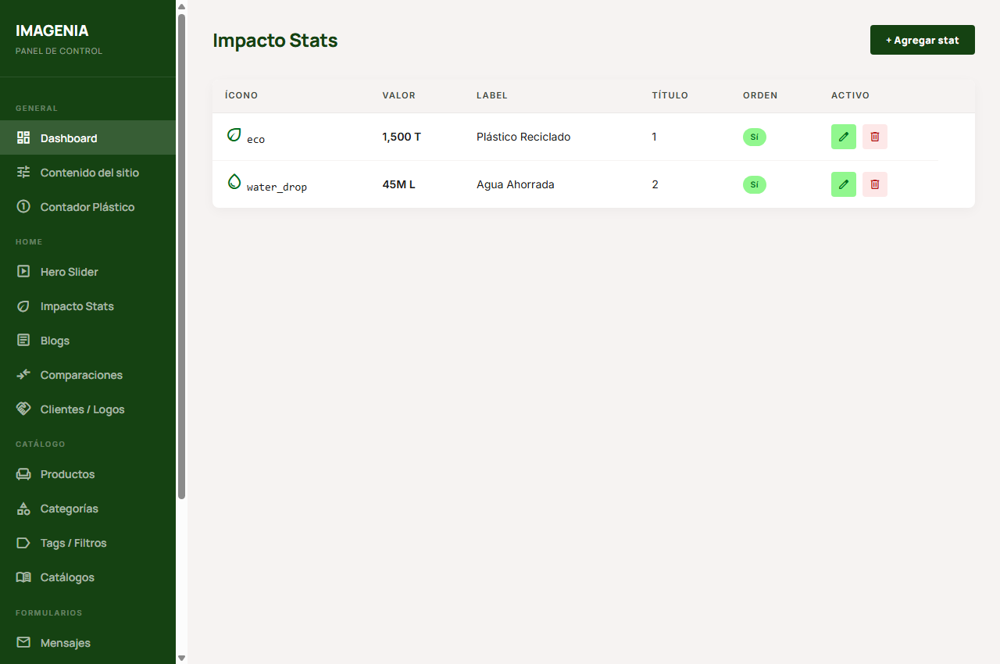
Para gestionar las estadísticas:
- Ícono: Escribe el nombre del ícono ecológico (de la biblioteca oficial de iconos que se muestra).
- Valor y Label: Escribe la cifra que deseas presumir (ej: "2,400 T" y la descripción corta como "Material reciclado").
- Usa el cuadro de Activo para mostrar u ocultar la tarjeta sin eliminarla de tu base.
article8. Blogs y Noticias
Esta herramienta te permite compartir con tus clientes las novedades sustentables y proyectos finalizados de Imagenia.
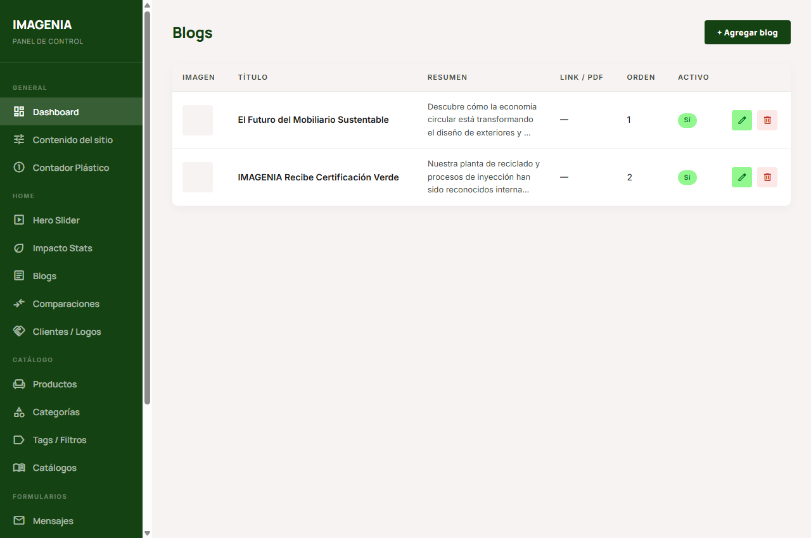
Pasos para publicar en el Blog:
- Haz clic en + Agregar blog.
- Escribe el Título de la nota.
- Carga la Imagen de portada que ilustrará tu publicación en la cuadrícula de noticias.
- Contenido: Escribe la nota completa. Puedes formatear párrafos y añadir negritas.
- Link / PDF: Puedes adjuntar una dirección URL externa o cargar un documento informativo PDF.
- Haz clic en Guardar.
compare_arrows9. Tabla Comparativa
Esta tabla ayuda a educar a tu clientela, mostrando las ventajas insuperables de los productos IMAGENIA frente a los materiales de construcción tradicionales.
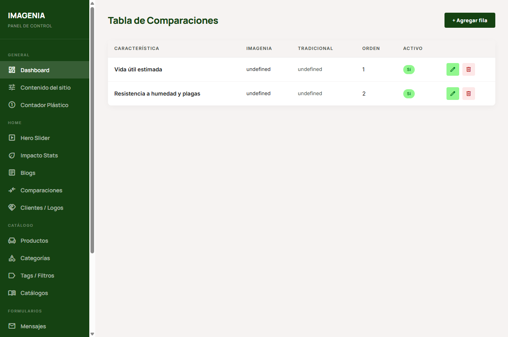
Simplemente haz clic en el lápiz azul para cambiar las ventajas físicas (como vida útil, peso, costos de mantenimiento) y haz clic en Guardar.
handshake10. Logos de Clientes y Aliados
Administra las marcas aliadas que aparecen deslizándose en el carrusel de logos del pie de página para generar confianza en nuevos prospectos.
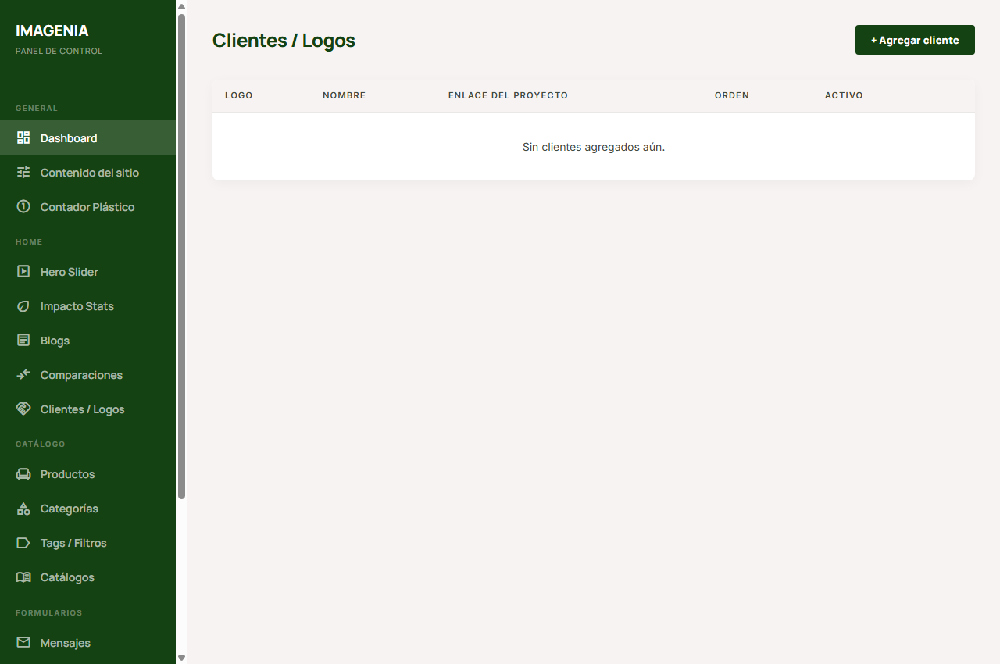
Solo necesitas cargar el nombre del cliente, subir el logo transparente en formato PNG o JPG y pulsar Guardar.
chair11. Fichas de Productos
Esta es la sección más importante de tu catálogo. Aquí administras todos los productos que se muestran a tus compradores en la galería web.
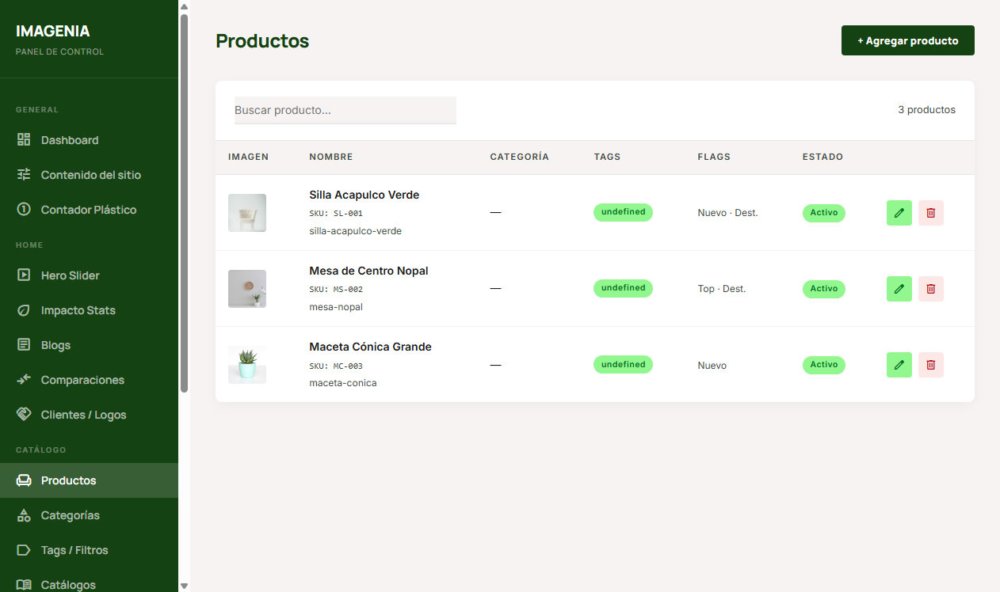
Cómo subir un producto nuevo al catálogo:
- Presiona el botón + Agregar producto.
- Completa los campos básicos:
- Nombre: El nombre de comercialización (ej: "Banca Urbana Forest").
- SKU: Código de identificación interna para inventarios.
- Slug: Identificador único para el enlace del producto (se genera automáticamente al escribir el nombre, no lleva espacios).
- Categoría: Asígnale la familia a la que pertenece para que los clientes lo encuentren fácilmente en su sección.
- Imágenes: Carga la Imagen Principal (que se verá en las portadas) y luego haz clic en Agregar a la galería para subir hasta 10 fotos alternativas.
- Etiquetas de estado: Marca las casillas opcionales si deseas destacar el producto:
- Destacado: El producto aparecerá en las posiciones recomendadas principales.
- Novedad: Se le colocará una insignia de producto recién ingresado.
- Más Vendido: Resalta el producto como el favorito de tu catálogo.
- Haz clic en Guardar.
category12. Categorías del Catálogo
Divide tus productos por familias lógicas (ej: Macetas, Bancas, Muebles de Exterior).
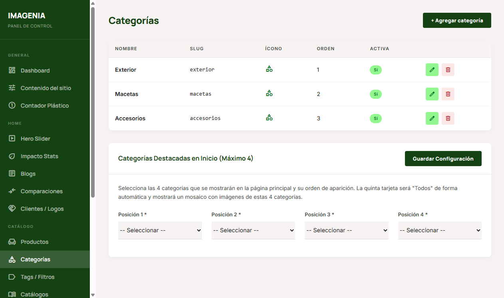
Configuración de Categorías:
- Puedes asignarles un icono visual escribiendo su nombre exacto en inglés del catálogo de Google Fonts. El panel te brindará un botón directo para buscar la lista completa en línea.
- En el bloque inferior del panel, puedes elegir cuáles 4 Categorías Destacadas se mostrarán en la portada principal de la web y guardar dicho orden.
label13. Tags e Filtros de Búsqueda
Permite que tus clientes filtren la galería de productos por especificaciones físicas (como colores, acabados o materiales).
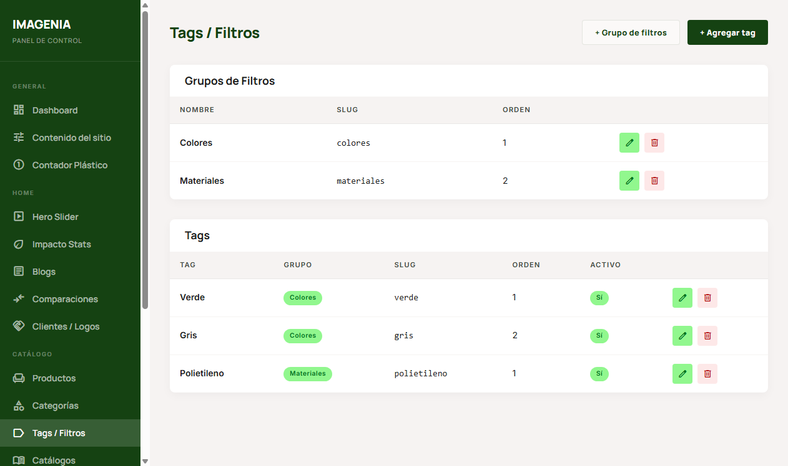
Esta sección se divide en:
- Grupo de filtros: La categoría de búsqueda global (ej: "Colores" o "Materiales").
- Tags: Las etiquetas individuales dentro de ese grupo (ej: "Verde", "Gris", "Plástico reciclado").
menu_book14. Catálogos PDF
Actualiza los folletos digitales completos que tus clientes corporativos pueden descargar directamente de la web.
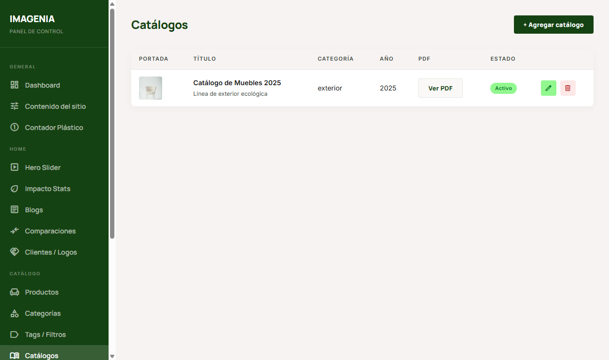
Haz clic en + Agregar catálogo, introduce el título, el año, sube una imagen de portada atractiva y carga el documento en formato PDF. El sistema se encargará de hospedar tu archivo en la nube automáticamente.
mail15. Mensajes de Contacto
En este apartado puedes consultar todos los correos e inquietudes enviadas por tus visitantes desde el formulario de contacto oficial.
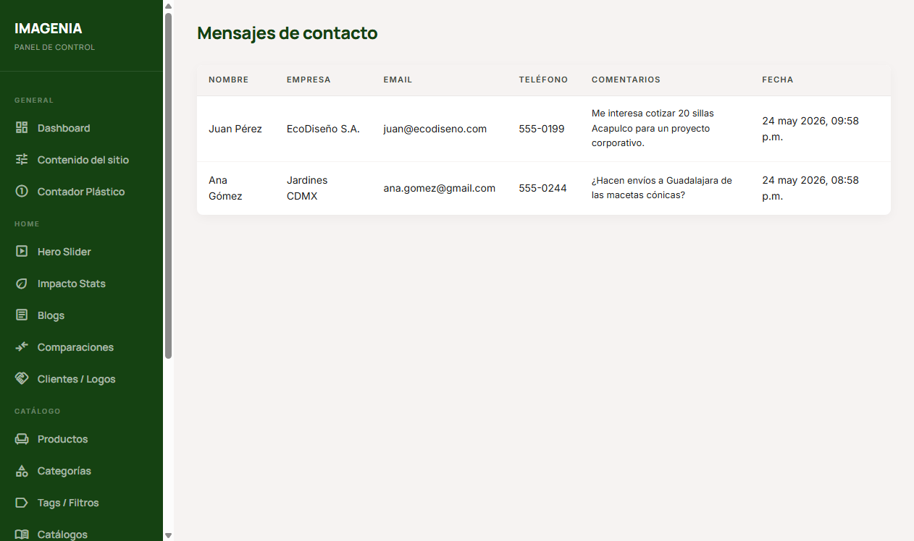
La tabla te muestra a detalle quién te escribe, su número telefónico, la empresa que representa y sus comentarios textuales en orden cronológico.
quiz16. Configuración de WhatsApp
El chat de ayuda de tu sitio web no es un botón simple; es un widget interactivo inteligente que ayuda a calificar clientes.
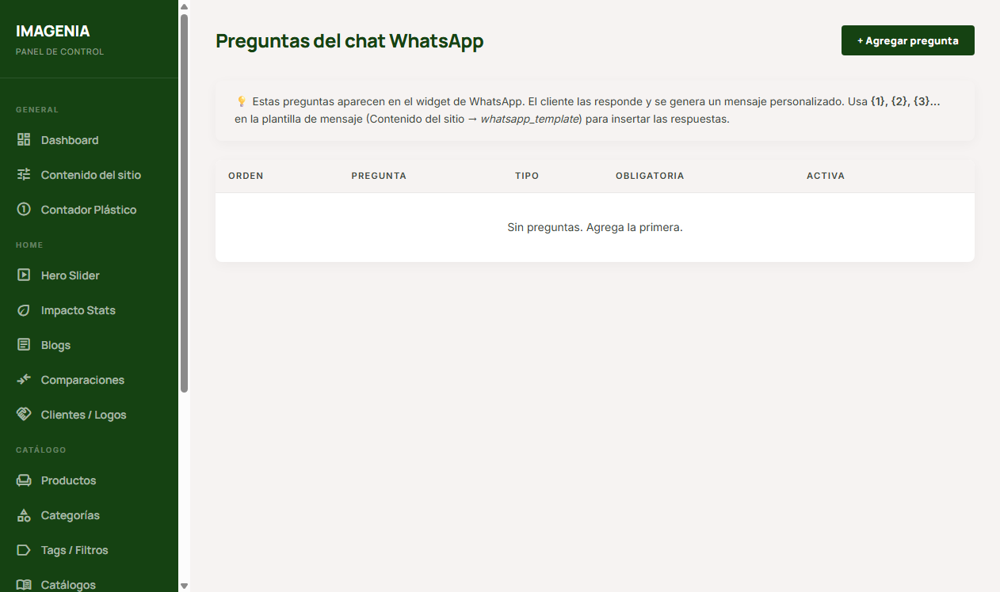
¿Cómo funciona?
El cliente hace clic en el globo de chat y responde una secuencia de preguntas automatizadas cortas (ej: "¿Cómo te llamas?", "¿Qué producto te interesa?"). Al terminar, estas respuestas se copian en su mensaje de WhatsApp para que cuando te escriba ya conozcas sus necesidades principales.
contacts17. Prospectos (Leads) de WhatsApp
Cada vez que un cliente inicia una conversación en tu widget de WhatsApp, sus respuestas y datos se guardan en el panel para que no pierdas ningún prospecto.
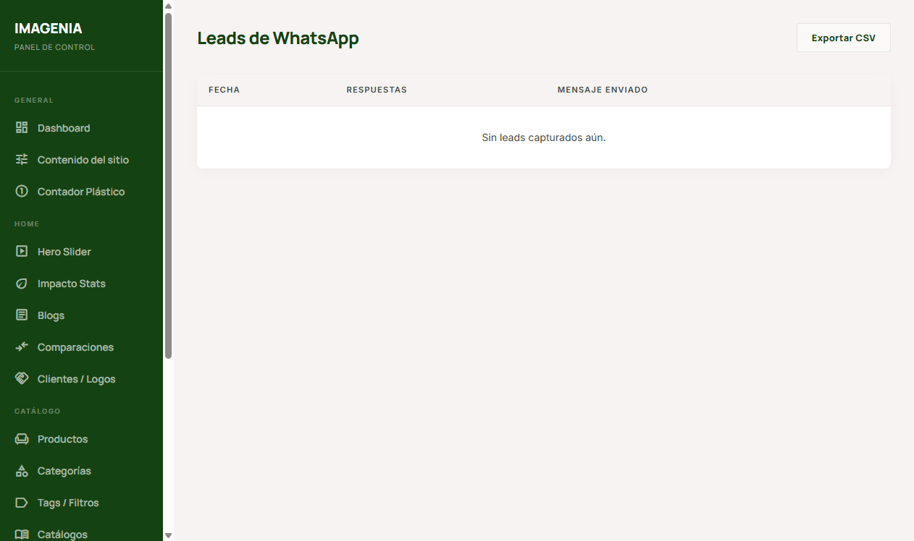
Exportar tus prospectos a Excel:
- Ingresa a la sección Leads capturados en el menú lateral.
- Haz clic en el botón Exportar CSV ubicado en la parte superior derecha de la tabla.
- Se descargará un archivo que puedes abrir directamente en Microsoft Excel para realizar cotizaciones, envíos de correo masivo o campañas de seguimiento.
analytics18. Panel de Leads (Acceso Restringido)
El sistema cuenta con un panel alternativo simplificado accesible desde la dirección /leads-admin/. Este panel está diseñado exclusivamente para perfiles de usuario con el rol de Visualizador de Leads (leads_viewer).
Su propósito es permitir que personal del área comercial o de ventas acceda a consultar y descargar prospectos sin tener permisos para modificar la configuración de la página web, productos, blogs o textos.
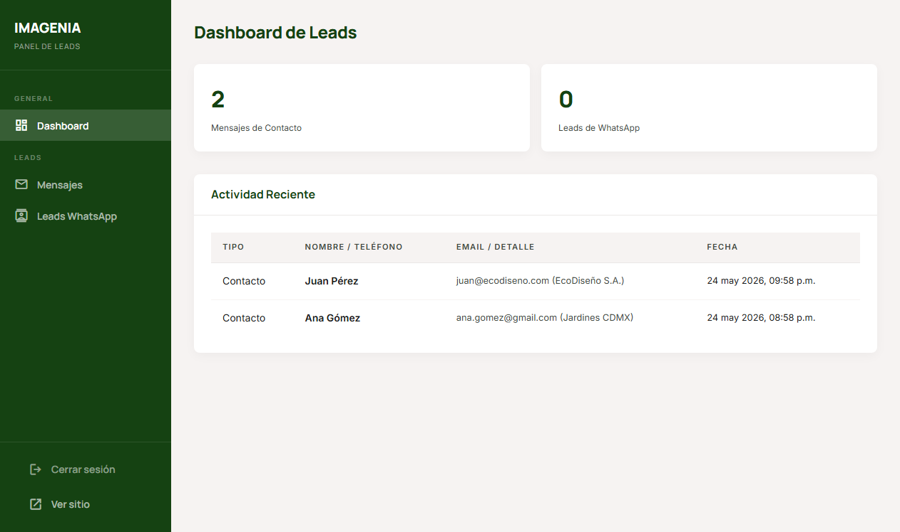
Características del Panel de Leads:
- Dashboard simplificado: Muestra un resumen rápido con el total de mensajes de contacto y prospectos de WhatsApp acumulados, junto con una tabla de actividad muy reciente.
- Acceso de solo lectura: Permite visualizar los mensajes recibidos y leads de WhatsApp, realizar búsquedas y exportar la información a formato Excel (CSV).
- Seguridad de Datos: No contiene opciones de edición, eliminación de productos, ni configuraciones críticas de la marca, previniendo alteraciones accidentales en el sitio web.